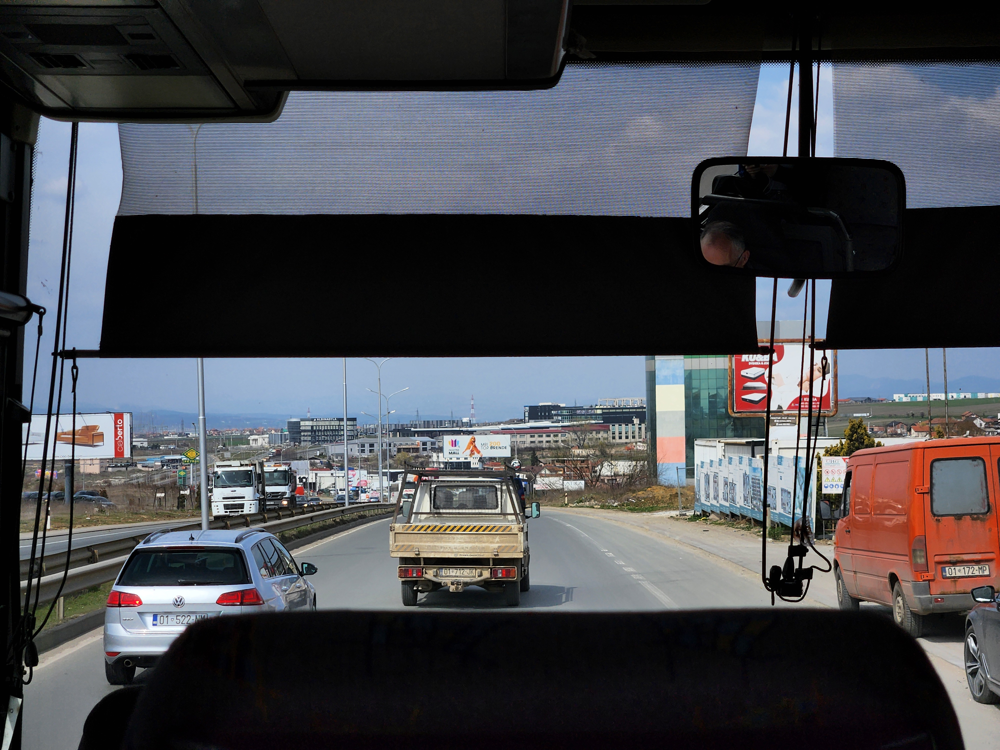

A bipolar exploration of Kosovo
The reasoning behind my visit to Kosovo is admittedly rather vague. There have been many times in life where I have been bestowed with a small sum of money of which I can do as I please, and nearly every time the same situation and questions arise - Can I go on holiday with this amount? Where can I go? Where's Interesting? Both my family and associates alike seem to avoid me when they know this scenario is on the horizon, they'll be met with countless messages and calls asking for opinions, looking at maps and travel guides, I don't blame them because it infuriates me, and I'm meant to be the one going on holiday and enjoying myself, so who knows what it's like on their end. Luckily the selection process for Kosovo was rather less painful than times previous, I was planning on a visit to Albania for a few days and then get a train to Pristina, but after discovering the somewhat abandoned railway network between the two was no longer operation, the considerably more active political situation in Kosovo made the decision, for once, rather simple.
I arranged this trip in my usual style, book a flight on fairly short notice and find a hotel that looks like it will provide basic necessities without (hopefully) losing my possession, limbs or dignity, and sort out the details once I arrive. I will omit the run-up to my arrival in Kosovo as it serves as fairly bland reading, however, the few who had heard of my plans engaged me in fairly stark conversations filled with facts from the UK Foreign, Commonwealth and Domestic Office (FCDO) website as well as, I'm sure, the usual suspects such as TripAdvisor and distant memories of the news in the late 1990's. As with most of the travel-based ventures I undertake, I knew to expect warnings but these were of a severity and frequency like never before, even more surprising considering some of the questionable destinations of my previous explorations.
These warnings included:
- A risk of terrorism, especially to British nationals.
- A risk of attack in places visited by foreigners, public gatherings, cultural events, religious sites and churches.
- I must avoid all travel to most of the northern municipalities as well as the northern part of Mitrovica.
- I will be under threat from Organised Crime, armed violence and vehicle explosions.
- There could be airstrikes, it won't be safe to go out at night and I must only take cash as ATMs will not work
- There is a threat from unexploded ordinance from the 1999 conflict, as well as swathes landmines along the entirety of the border with Albania, parts of central Kosovo, and any mountains between Kosovo, Albania and Montenegro.
- There is a security threat if my ID isn't carried (and copied elsewhere) during the entirety of the stay and I would have to make sure not to take pictures of anything secure, police-based, military or official.
- If driving or in a vehicle at any point during my stay, I'd have to consider the poor road conditions, risk of landslide and flooding, as well as fuel quality, not to mention being advised not to be in a vehicle at night where possible.
- I must take an appropriate amount of food and water if I plan on crossing a border.
- I must beware if I hire a vehicle as Serbian registered vehicles are being attacked in Kosovo.
- There is a risk of forest fire, Kosovo is in a particularly active seismic zone, and finally I needed to make sure I was vigilant towards flooding and landslides, particularly in hilly and mountainous regions.

Despite this plethora of negativity, warnings and concern, I journeyed on with what can safely be described as a preconceived notion of Kosovo and its surrounding areas. After around two and a half hours of a balkan-looking hooligan purportedly elbowing me in the ribs before being moved away from his €40 'extra legroom' seat, I landed in a pitch-black, very much unassuming airport.
I had arrived in the place that, if the reports and advice above were anything to go by, would inevitably end my life well before the scheduled return flight home a week later.
Whilst I won't necessarily be giving a detailed account of my time in Pristina, I did learn a lot about both the people and the region. My first evening there revolved around a short walk around the city, hiding my possessions and looking at my feet as to not arouse suspicions from the terrorists or gangsters that was per my prior warnings, almost certainly going to rob, attack or bomb me on-sight. Thankfully it took no more than 5 minutes of walking around Pristina to see that it was fairly well maintained, WiFi appeared to be prevalent, and the workers in the 24hr 'Spar' supermarket were rather chatty, wondering where I'd come from and why. This theme continued over the next few days, the place that I had been warned was bordering on anarchy, an ex-warzone that still contained as much jeopardy as the late 1990's with terrorists and gangsters roaming free, turned out to be a friendly, sun-bathed, almost Mediterranean feeling gem in the Balkans.
Much to peoples puzzlement there were only two main goals of this trip, both with particularly political themes. Firstly, I wished to view the infamous Bill Clinton statue and poster in the centre of Pristina. Thanks to his significant involvement in representation of Kosovo within Yugoslavia, including the independence movement of Kosovo in the 1990s, he has come to be viewed as somewhat of a hero - an odd spectacle I must say, It's rare you see the US government involve themselves in foreign conflicts and come out looking like the 'good guy', especially given their questionable 'humanitarian' efforts of the 1990s and 2000s.
